Use Case
AWS S3 (Simple Storage Service) follows the serverless model with theoretically infinite amount of storage without the need to think about the servers and the storage. It can be used for storing media, backups, documents and to a wide variety of use cases. It’s so each to use S3 that things might go out of control leading to spiralling costs for an enterprise.
With the Cloud sprawling happening in the organizations, more and more applications would be storing the data in S3 along with the users. With time, the data stored in S3 would become huge which would lead to unnecessary expenditure to the enterprise. There might be a lot of files which are not required or not have been accessed for the last few months or years. These are the prime candidates for deletion for the sake of cost cutting.
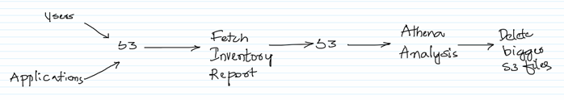
As the number of files in S3 grow, it becomes more of a challenge to identify the big files to be deleted. We should be able to generate a S3 inventory report with the bucket name, object name, when was it last modified and a few other attributes. Once we have the report analysis can be done using Athena to figure out bigger files and these can be deleted manually with caution.
Caution needs to be taken when deleting the files in S3. If accidently deleted, the data in the files would be gone for ever. One way to get around it is to enable versioning on a bucket. In this case, when a file is deleted in S3 a delete marker is placed on the deleted file instead of deleting the actual file and so the deleted file can be restored.
Also, we should be able to figure out who has deleted the files using the S3 Server Access Logs feature or by using the AWS Cloud Trail Service.
AWS Services: S3, Athena, IAM
-- Create a bucket is S3 with some folders and upload some big data sets into it. There are lot of big data sets available on the internet, one of it can be downloaded from the below site.
https://dataverse.harvard.edu/dataset.xhtml?persistentId=doi:10.7910/DVN/HG7NV7
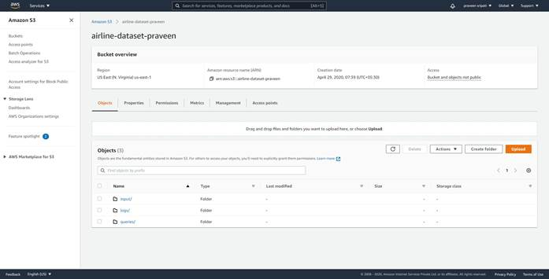
-- As seen in the below screen big files have been uploaded to S3.
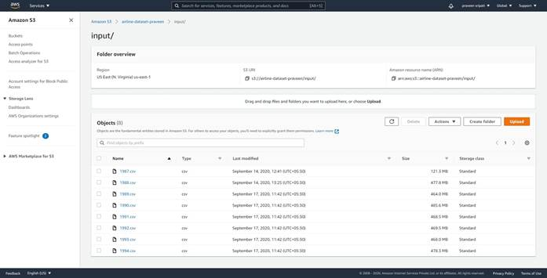
-- Create another bucket in S3 to store the inventory results. The results would be generated by the `S3 inventory configurations`.
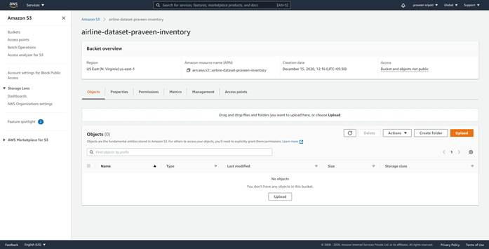
-- Go back to the original bucket and click on the ‘Management tab`.
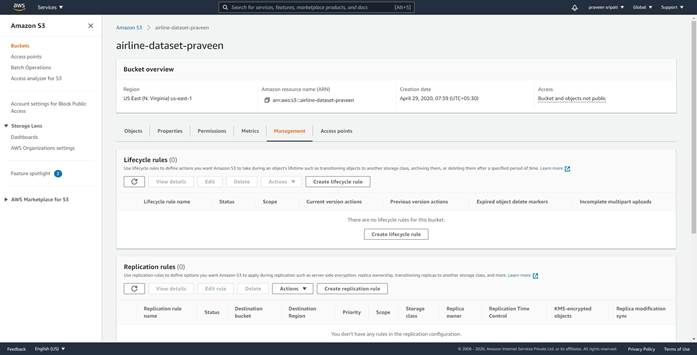
-- Navigate to the bottom of the screen and click on `Create inventory configuration`.
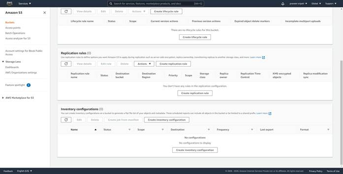
-- Give the inventory configuration a name. For the destination bucket give the path to the inventory bucket created earlier as shown below.
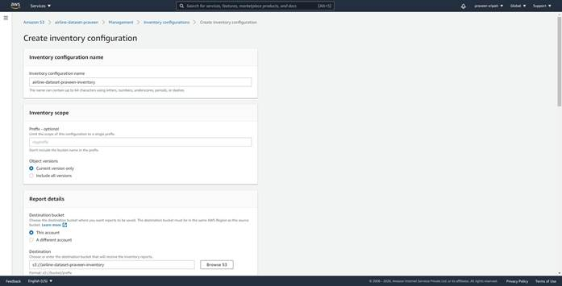
-- Go with all the default options and make sure to select the `Output format` as `Apache ORC`.
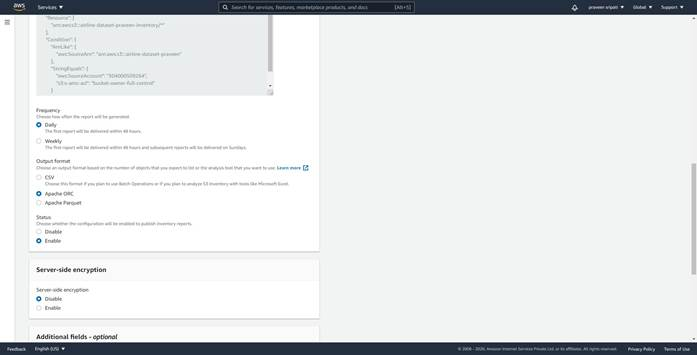
-- For the `Additional fields – optional` make sure to select all the fields and click on `Create`.
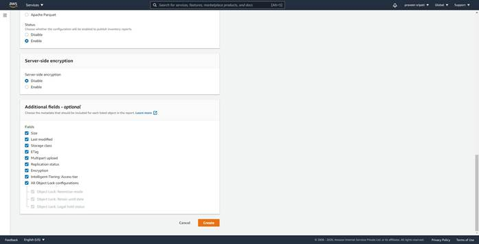
-- The inventory configuration would be created as shown below.
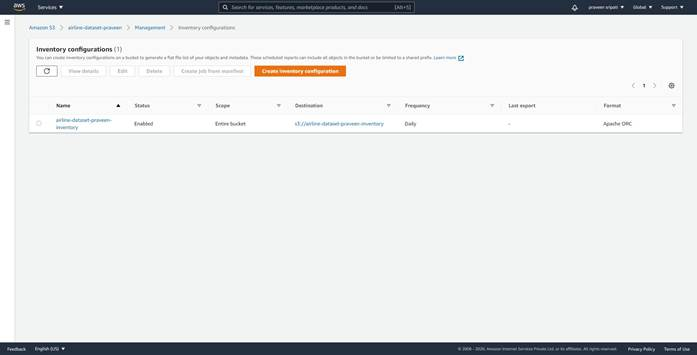
-- The actual inventory would be created in the S3 inventory bucket as shown below. The inventory should be generated in less than 24 hours as per the AWS documentation. The inventory generated is a binary file.
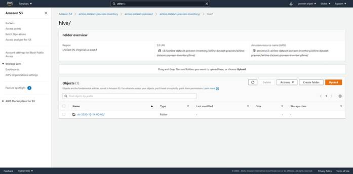
-- Create another bucket in S3 for storing the results from the query in Athena.
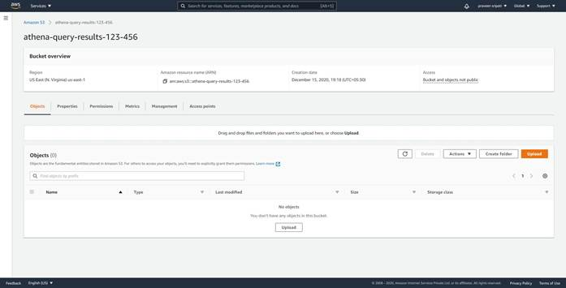
-- Navigate to the Athena Management Console and click on Settings.
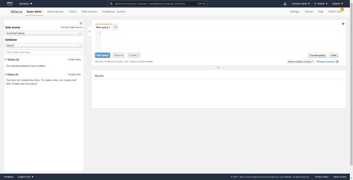
-- For the `Query result location` specify the S3 bucket created for storing the Athena query results created earlier.
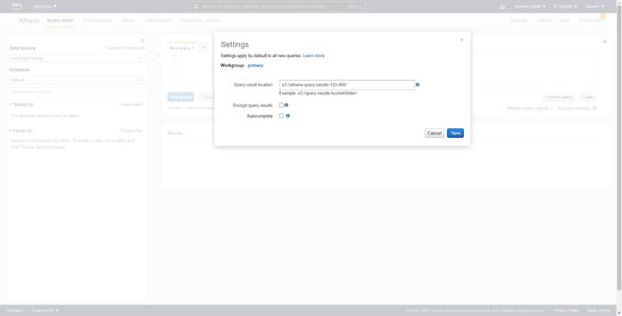
-- Copy the below statement into the Athena Console. Make sure to replace the highlighted section. Click on `Run query`.
CREATE EXTERNAL TABLE inventory(
bucket string,
key string,
size bigint,
last_modified_date timestamp,
e_tag string,
storage_class string,
is_multipart_uploaded boolean,
replication_status string,
encryption_status string
)
PARTITIONED BY (dt string)
ROW FORMAT SERDE 'org.apache.hadoop.hive.ql.io.orc.OrcSerde'
STORED AS INPUTFORMAT 'org.apache.hadoop.hive.ql.io.SymlinkTextInputFormat'
OUTPUTFORMAT 'org.apache.hadoop.hive.ql.io.IgnoreKeyTextOutputFormat'
LOCATION 's3://airline-dataset-praveen-inventory/airline-dataset-praveen/airline-dataset-praveen-inventory/hive';
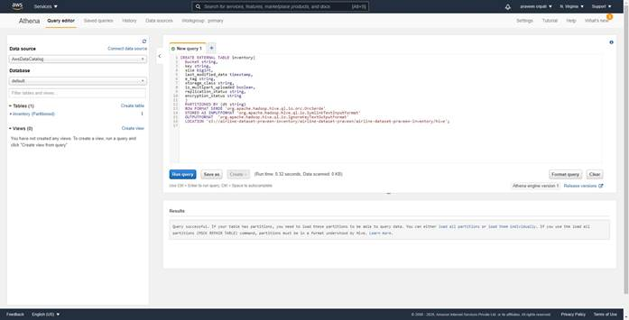
-- To make sure that the partitions of the table are updated, likewise run the below command.
MSCK REPAIR TABLE inventory;
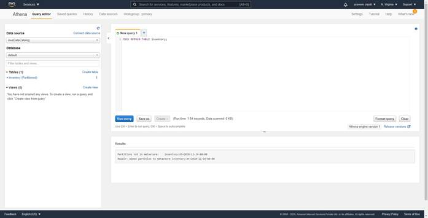
-- Finally, execute the below query to get the size of the different folders within the buckets in GB. As noticed the input bucket where the big files have been uploaded has 3 GB of files in it.
Now, we should be able to identify the files in this input folder which are not required and can be deleted manually.
SELECT prefix, SUM(size)/1000/1000/1000 AS total_size FROM (
SELECT regexp_extract(i.key, '([^\/]*\/).*', 1) AS prefix, i.size
FROM inventory AS i WHERE i.dt = '2020-12-14-00-00'
) GROUP BY prefix ORDER BY total_size DESC;
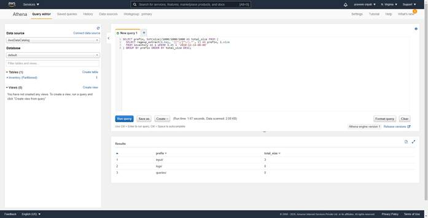
-- The results can also be found in the in S3 bucket created as shown below. Thee selected csv files can be downloaded and the file opened in Excel to see the results of the Athena query.
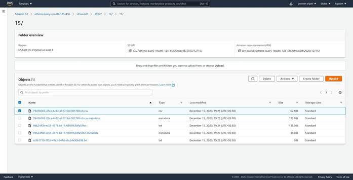
Conclusion
Cloud is all about saving cost, but by using the above technique around S3 further cost savings can be achieved. This is always a constant pressure by the different companies to reduce their costs and this would definitely help them.